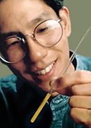
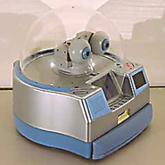
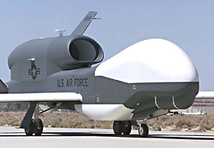

Dr. Isaac Chuang, IBM-Forscher im Almaden Forschungszentzrum (San Jose, Kalifornien) mit einem Quantencomputer in einem Glasröhrchen mit speziell designten Molekülen. Der Computer zerlegte die Zahl 15 in ihre Primfaktoren 3 und 5. So einfach diese Rechnung auch ist, Quantencomputer eröffnen neue Möglichkeiten in der Krypthographie. Im Prinzip sind mit Quantencomputern alle auf Primfaktorzerlegung basierenden Verschlüsselungsalgorithmen knackbar. Fujitsu entwickelt den Roboter MARON 1, der zu den "Care"-Robotern gehört (engl. care=sich um etwas kümmern, sorgen, aufpassen). Der Roboter kann per Handy ferngesteuert werden, Fotos aufnehmen, und diese auf den Bildschirm des Handys zurücksenden. MARON 1 kann dazu verwendet werden, nächtens auf Haushalte und Büros aufzupassen, oder auf pflegebedürftige Personen. "Global Hawk", ein Langstrecken-Aufklärungsroboter der US Airforce(Erstflug:1998), wird in Afghanistan eingesetzt.